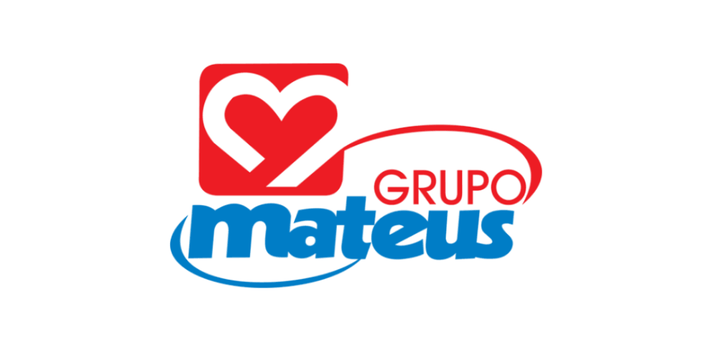

Como o Grupo Mateus usou dados reais para entender seu público e reposicionar sua operação em Recife
Agendar diagnóstico gratuito
Através da Pesquisa de Mercado e da criação de documentos com indicadores estratégicos, a FCAP JR. trouxe clareza acerca do público alvo, permitindo esforços mais estratécicos para aumentar a lucratividade.
O Desafio: Resultados abaixo do esperado e falta de clareza sobre o consumidor local
A unidade da Iputinga enfrentava desafios de performance, e a ausência de dados dificultava a tomada de decisões estratégicas. Era preciso entender o público da região para agir com precisão.
Nossa Abordagem
Desenhamos uma pesquisa exclusiva para entender o território da Iputinga e gerar dados para decisões com base em evidências.
Elaboração do questionário
Desenvolvido com base no briefing e nas particularidades do bairro Iputinga.
Coleta com o público-alvo
450 respostas coletadas em menos de 3 dias com moradores da região.
Análise dos dados
Tratamento e cruzamento de informações para identificar padrões e insights estratégicos.
Resultados alcançados: Insights rápidos e alinhamento estratégico imediato
- ✔450 respostas coletadas em tempo recorde
- ✔Geração de reunião estratégica com toda a equipe da unidade
- ✔Fortalecimento da confiança e proximidade com a FCAP Jr.
- ✔Base sólida para decisões assertivas sobre atuação regional
“A parceria entre a FCAP JR. e o Grupo Mateus foi fundamental para a realização de uma pesquisa de mercado relevante para a nossa atuação na cidade de Recife. O projeto trouxe insights valiosos e contribuiu diretamente para o nosso processo de tomada de decisão.”
Sua empresa enfrenta desafios parecidos?
Solicite um diagnóstico gratuito com nossos consultores e descubra como dados reais podem guiar suas decisões estratégicas.
Solicite um diagnóstico gratuito